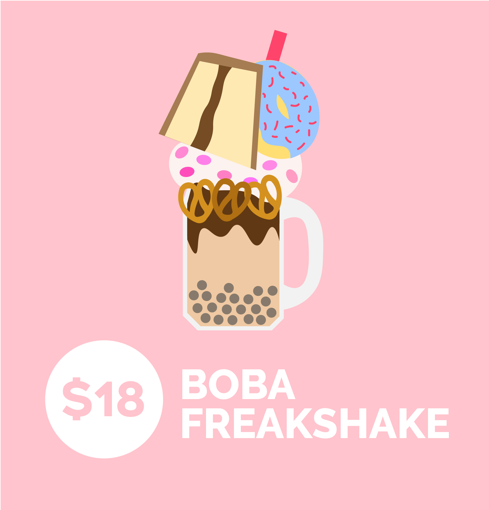
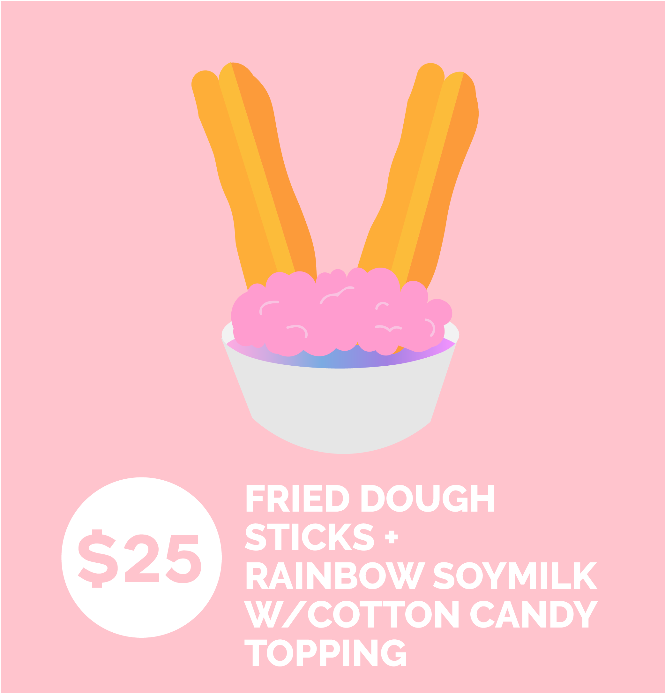
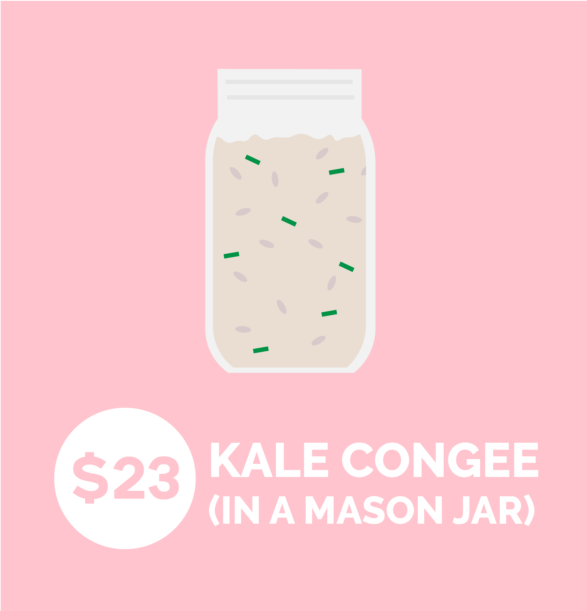
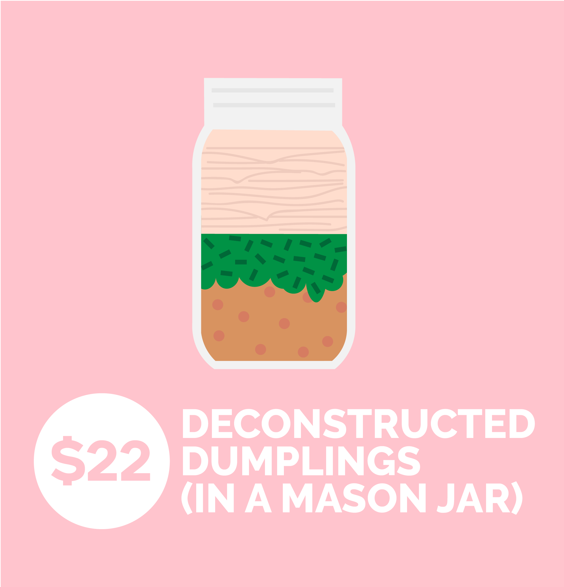
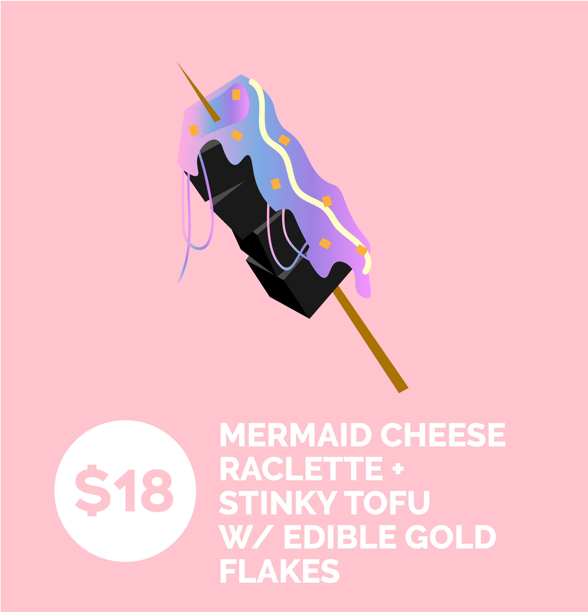

12/ the Gentrification Food Truck™
This is a prototype of a vehicle I want to actually build for my senior studio art project. It would be a real food truck all painted in millenial pink, and I will make all the food listed on the menu (may adjust to food trends accordingly).
I am incredibly interested in the rise of the Instagram-driven aesthetic economy and how it has affected ethnic cuisine, particularly the Chinese food scene in NYC.
I remember talking to an old man selling old fashioned Hong Kong style egg waffles for $2 each in a corner of Canal Street. He told me he is reallys struggling to keep this business running, because he couldn't compete with the other more well-known trendy egg waffle places like Wowfull and Eggloo, where waffles are topped with icecream, candies, fruit, and pretty much every topping you could imagine for ~$8 a pop. When you google "best egg waffles nyc", every website directs you to these stores that sell the Westernized concoction of egg waffles, and as a result the traditional businesses are suffering.
Instagram and other social media has contributed significantly to the aesthetic food consumption. While there is nothing wrong with wanting our food to look good, what does it mean when the majority are willing to sacrifice tast and quality for the outer appearance? Instagram food has become the popcorn-SciFi of blockbusters, the Museum of Icecream of cultural institutions; it exists as a photo backdrop, as the embodiment of ultimate ocularcentrism.
In the age where the average person directly contributes to modern cultural presence, there is no high versus low, only relevance versus irrelevance. So where are our gatekeepers? Perhaps as art critic Ben Davis puts it, "The ability to feed the hunger of the image machine but not let it totally consume you may be the artistic skill of the future."